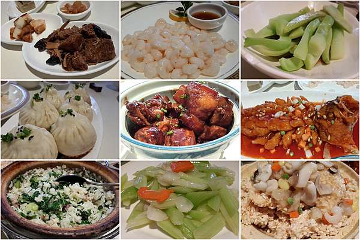
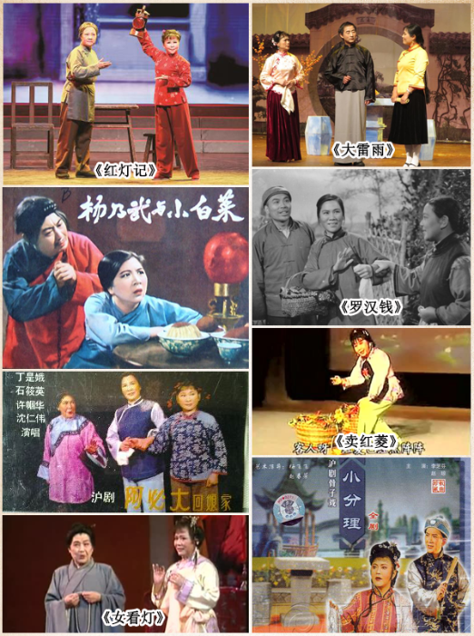
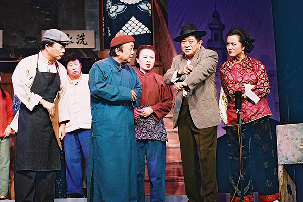

Shanghainese, also known as the Shanghai dialect or Shanghaihua, is a distinct language spoken by the locals in Shanghai, China. As a member of the Wu Chinese language family, Shanghainese has its own unique pronunciation, vocabulary, and grammar. It is widely spoken and deeply embedded in the daily lives and culture of Shanghai's residents. The Shanghai dialect is characterized by its soft and melodic tones, with subtle differences in intonation conveying nuances of meaning. One notable feature is the retention of the retroflex consonants, where sounds like "zh," "ch," and "sh" are pronounced with a slight curl of the tongue. Shanghainese is renowned for its rich and expressive vocabulary, often incorporating loanwords from English, Japanese, and other languages due to Shanghai's historical role as an international trading hub. The language is deeply intertwined with Shanghai's cultural heritage, humor, and local traditions. While Mandarin Chinese has become the standard language for communication, Shanghainese remains an important aspect of Shanghai's identity, fostering a sense of community and belonging among its speakers. Preserving and promoting the Shanghai dialect has become a topic of cultural significance, as it represents a unique linguistic heritage that adds depth and diversity to the vibrant tapestry of Shanghai's cultural landscape.
Shanghai, a city renowned for its culinary delights, offers a gastronomic journey that tantalizes the taste buds. The local cuisine, known as Shanghainese food, is a harmonious fusion of flavors, combining traditional Chinese culinary techniques with international influences. One cannot miss the iconic xiaolongbao, steamed soup dumplings with a delicate thin skin and savory fillings, which are a quintessential part of Shanghai's food culture. Another must-try dish is the famous hairy crab, a seasonal delicacy known for its succulent meat and rich roe. These delectable crustaceans are best enjoyed during the autumn months. Shanghai is also renowned for its fresh seafood, whether it's stir-fried shrimps, braised eel, or steamed fish, each dish boasts the natural flavors of the sea. For a taste of history, the city offers traditional snacks like the crispy pot stickers known as shengjianbao and the savory rice cakes called niangao. Furthermore, Shanghai embraces international cuisine with open arms, offering a wide array of global flavors. From world-class fine dining establishments to bustling street food markets, the city satisfies every culinary craving. Explore the vibrant night markets and savor local street food like jianbing (Chinese crepes), stinky tofu, and scallion pancakes. For those seeking a luxurious dining experience, Shanghai's high-end restaurants showcase diverse international cuisines, including French, Italian, Japanese, and more. To enhance the dining experience, Shanghai's bustling food scene is complemented by trendy dining venues, rooftop bars, and stylish cafes. Whether you're a food enthusiast or simply looking to indulge in mouthwatering flavors, Shanghai's culinary landscape offers a diverse and unforgettable gastronomic adventure.
Shanghai opera(沪剧) is a traditional Chinese theatrical art form that originated in Shanghai and is one of the most influential regional opera genres in the area. It combines elements from Kunqu, Peking opera, and Pingju, showcasing a distinctive performance style and the use of the Shanghai dialect in singing. Shanghai opera performances prioritize emotional expression and physical movements, with actors using melodious singing and exquisite body movements to bring their characters to life. The plays often revolve around themes of love, loyalty, and historical events, captivating audiences with engaging narratives and vibrant stage settings. Accompanied by traditional Chinese instruments like the erhu and pipa, the musical aspect adds depth and richness to the performances, creating a memorable experience for spectators.
Shanghai Farce(滑稽戏), also known as "clown play" or "farce," is a comedic theatrical form that originated in Shanghai and gained popularity in the early 20th century. Shanghai Farce performances are characterized by their light-hearted and humorous nature, utilizing exaggerated gestures, witty dialogues, and physical comedy to entertain the audience. Comedic timing and improvisation skills are crucial for Shanghai Farce actors in delivering laughter and engaging the audience. Slapstick humor, funny facial expressions, and wordplay are commonly employed, creating a lively and entertaining atmosphere. Shanghai Farce plays often satirize societal norms, mock human foibles, and offer social commentary through comedic storytelling. The comedic charm of Shanghai Farce provides an enjoyable and amusing experience, showcasing the vibrant and playful side of Shanghai's cultural traditions. Both Shanghai opera and Shanghai Farce play significant roles in Shanghai's cultural heritage, representing the diversity and richness of the city's theatrical arts. Whether it's the emotional depth and elegance of Shanghai opera or the comedic brilliance and laughter of Shanghai Farce, these art forms contribute to the vibrant cultural tapestry of Shanghai, delighting audiences with their unique performances.
 